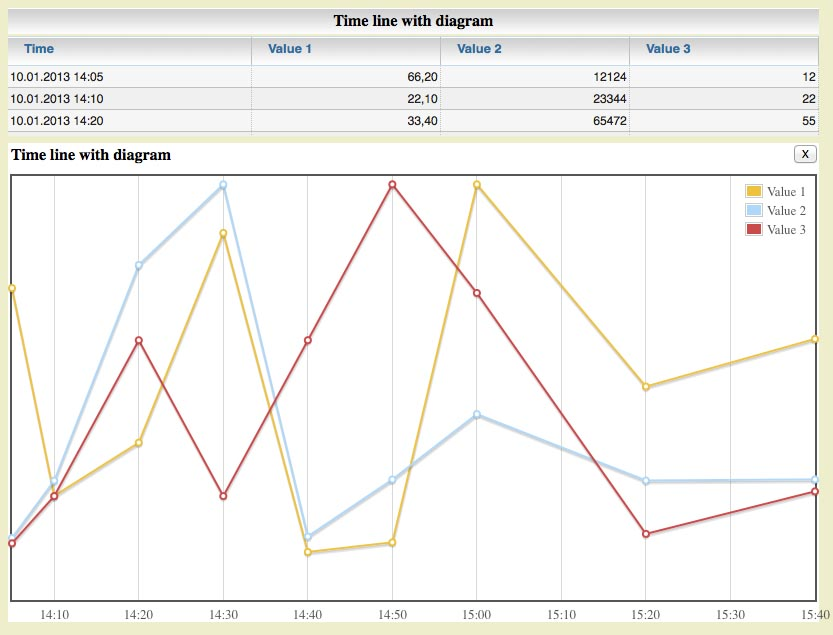

Slickgrid Extended
SlickGrid is a javascript data table created by Michael Leibman (michael.leibman@gmail.com, http://github.com/mleibman/slickgrid).
It supports large amount of data by presenting only visible part of data rows as html-DIVs.
So size of html DOM structure is independent from length of data table to show.
SlickGridExtended extends SlickGrid with following features (some of them available via right click context menu):
- Automatic sizing of column widths dependent from content width
- Automatic wraping of column content to prevent horizontal scroll bar
- Sort columns according to column type (string, float, date). Date and time sorting according to given locale sign.
- User can change table height with slider at table bottom
- Context menu (right mouse click in table) with additional actions
- Filter table result with filter conditions per row (activate filter via context menu "show search filter")
- Show numeric column content in diagram (x-axis numeric or time line)
- Export table content in CSV formatted file (import into Excel etc.)
- Show sum, count and distinct values for numeric columns
You can view demo and download sources
here.
